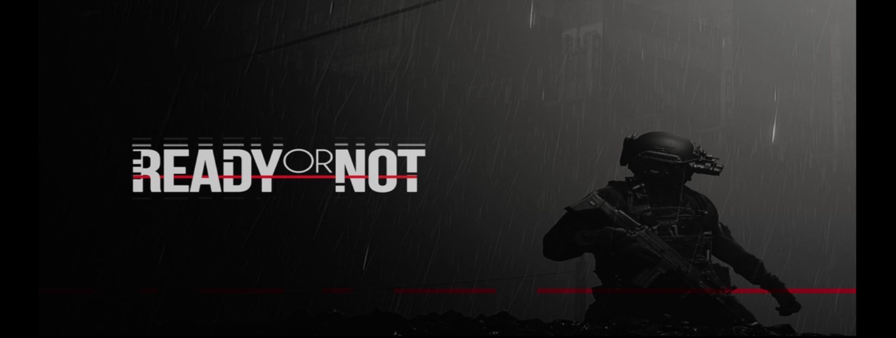
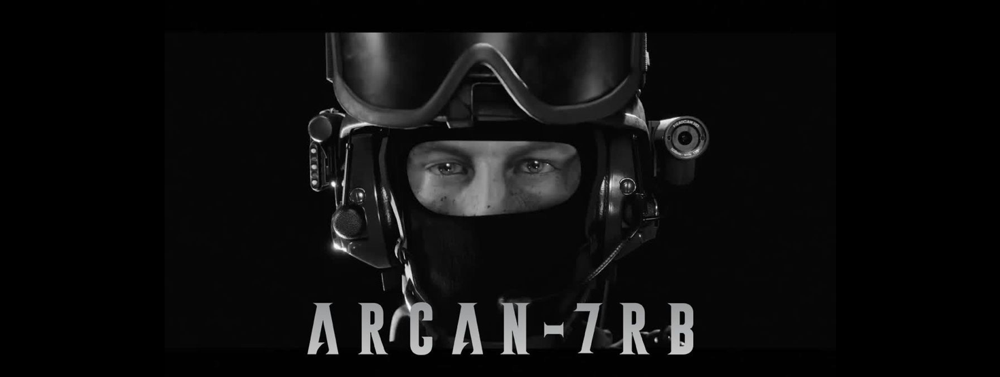

READY OR NOT: LATEST BLOG

Is the Ready or Not blog interactive, allowing players to leave comments or ask questions?
The availability of interactive features, such as leaving comments or asking questions,
on the Ready or Not blog may vary. However, the developers frequently engage with the
community through their official forums or social media platforms,
where players can ask questions and interact with both the developers and fellow players.
Read more...
Another post

How can I stay updated with the Ready or Not blog?
To stay updated with the Ready or Not blog, you can bookmark the blog's website
and check it regularly. Additionally, following the game's official social media channels, such as Twitter or Facebook,
can ensure you receive notifications and updates whenever a new blog post is released.
Read more...
What information can I find on the Ready or Not blog?
The Ready or Not blog provides a wealth of information about the game's development progress,
new features, gameplay mechanics, behind-the-scenes insights, community spotlights,
announcements, and more.
It serves as a hub for players to learn about the latest happenings in the game's development.
Read more...